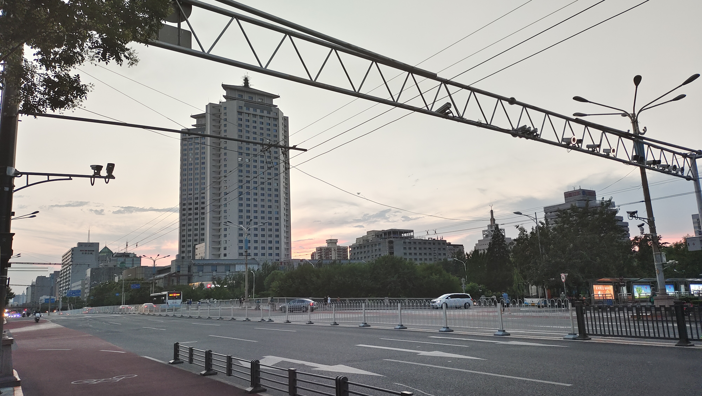
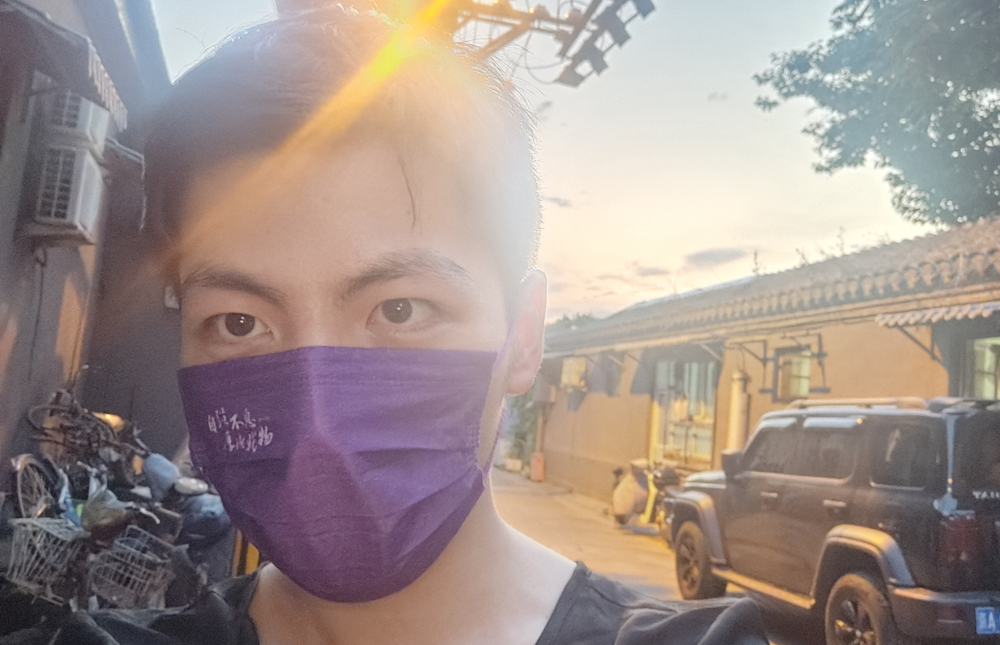
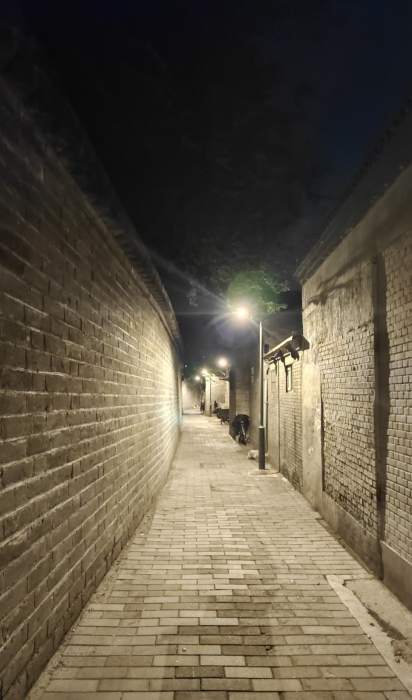
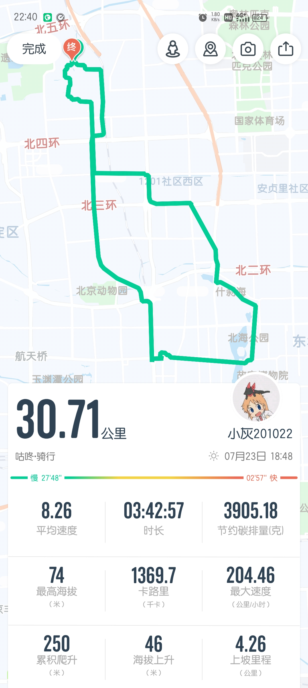

骑车🚲出校转转！
出发前
几天前看到树洞里有人推荐骑行路线后就收藏了，周六没多想（此乃谎言）就决定傍晚骑车出校按这个路线骑一圈打卡，看天气预报说有雨就只带了一把伞，除了学生卡钥匙手机口罩其它什么都没带。
推荐路线：阜成门➡鲁迅博物馆➡白塔寺➡广济寺➡西什库教堂➡金鳌玉蝀桥（中南海）➡故宫角楼➡北海公园
作为一个宅觉得还是要多出校转转，本科的时候就没怎么看看南京
前往阜成门
阜成门是推荐路线起点，六点从学校出发一直往南就到了。天还亮着，夕焼很美。其实应该再早点出发的。
骑自行车上立交桥感觉挺奇妙的。
东行
先到马路北边，进阜成门内北街需要扫健康宝（后面都是），尽头就是鲁迅博物馆。右转进胡同，有不少居民，转角还有小五金店之类的。很快就穿出去了。
贴一张唯一的自拍
沿着阜成门内大街一路向东，左手边有很多寺庙。这时天已经暗下来了，所以看的不是很清楚。自行车道挺窄的。
很快到了北海大桥，推荐帖说不能拍照，这里确实戒备很森严，有不少武警站岗，还有几处在盘问行人的样子。右边是中南海，但是有高高的栅格板挡着。
快速骑走，到路口了，对面就是故宫角楼。
慢慢骑着，右边隔着河是神武门，左边很高的地方有座倚望楼。
就这样骑到沙滩北街，该向北了。
胡同
沿着沙滩后街，绕着景山公园外围，跟着地图到了北海公园东门，可惜门卫说关门了……问了下开放时间是早上六点半到晚上八点半，只能以后再来了。但不想原路返回，就进了雪地胡同。这个胡同很窄，半路上有人的三轮在卸货正好把路堵住了，所以改往西，胡同里挺暗的，只有几个人。走到最里面（可能吧）感觉这边是个死胡同，都是居民楼了。所以还是掉头回去了……
还好没人跟我搭话哈哈哈。可能穿着家里做的单褂骑着买菜车挺有融入感的
但我还是不想掉头往东，于是又钻进了恭俭胡同…… 沿着北海公园边上的北海北夹道一直往北，这里没碰到人就拍了张。
钻胡同好好玩啊
什刹海
骑过地安门大街，准备沿着什刹海走。有不少路都封上了，终于在一个人比较聚集的路口发现了扫健康宝的入口。什刹海游客还挺多的，有些地方就下车推行了。一些结伴出行的在湖边拍照，还有不少小吃，以及怂恿我前面和后面男生给女友买花的小贩。
返程
比较晚了，就直接回校啦，到校已经十点半了。很开心很累。
最后附骑行路线（北海公园那儿路线不对，因为大概GPS在桥上断了）
上一篇：小灰的单人穷游